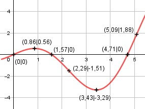

Aufgabe 173 f(x) = x * cos x x im Bogenmaß Produktregel erste Ableitung: u = x, u' = 1 v = cos x, v' = -sin x f'(x) = 1 * cos x + (-sin x) + x f'(x) = cos x - x * sin x Summen- und Produktregel zweite Ableitung: u = -x, u' = -1 v = sin x, v' = cos x f''(x) = -sin x + (-1 * sin x + cos x * (-x)) f''(x) = -sin x - sin x - x * cos x f''(x) = -2 * sin x - x * cos x Summen- und Produktregel dritte Ableitung: u = -x, u' = -1 v = cos x, v' = -sin x f'''(x) = -2 * cos x - 1 * cos x - sin x * (-x) f'''(x) = x * sin x - 3 * cos x Definitionsbereich: 0 ≤ x ≤ 2π Mit 2π = 6,28 Wertebereich: -3,29 ≤ f(x) ≤ f((6,28)) = 6,28 (für -3,29 siehe Extrempunkt) Symmetrie zur y-Achse bzw. zum Punkt (0|0): f(-x) = -x * cos (-x) = –x * cos x ≠ f(x) --> keine Achsensymmetrie -f(-x) = -(-x * cos x) = x * cos x = f(x) --> Punktsymmetrie Nullstellen: f(x) = 0 x * cos x = 0 x1 = 0 cos x = 0 x2 = π/2 = 1,57 ≙ 90° x3 = (3/2)π = 4,71 ≙ 270° N1(0|0), N2(1,57|0), N3(4,71|0) Schnittpunkt mit der y-Achse: x = 0 0 * cos 0 = 0 Sy(0|0) Extrempunkte: f'(x) = 0 cos x - x * sin x = 0 Wertetabelle: x 0 1 2 3 4 f'(x) 1 -0,3 -2,2 -1,4 2,4 x 5 6 2π f'(x) 5,1 2,6 1 Vorzeichenwechsel zwischen 0 und 1, gewählt Nullstelle x01 = 0,8 Vorzeichenwechsel zwischen 3 und 4, gewählt Nullstelle x02 = 3,35 Näherungsverfahren von Newton: f(x0) x1 = x0 - ------- f'(x0) cos 0,8 - 0,8 * sin 0,8 x11 = 0,8 - ------------------------------- -2 * sin 0,8 - 0,8 * cos 0,8 x1 = 0,8 - (-0,06) = 0,86 f(0,86) = 0,86 * cos 0,86 = 0,56 cos 3,35 - 3,35 * sin 3,35 x2 = 3,35 - --------------------------------- -2 * sin 3,35 - 3,35 * cos 3,35 x2 = 3,35 - (-0,08) = 3,43 f(3,43) = 3,43 * cos 3,43 = -3,29 f''(0,86) = -2 * sin 0,86 - 0,86 * cos 0,86 < 0 --> Hochpunkt (0,86|0,56) f''(3,43) = -2 * sin 3,43 - 3,43 * cos 3,43 > 0 --> Tiefpunkt (3,43|-3,29) Wendepunkte: f''(x) = 0 -2 * sin x - x * cos x = 0 Wertetabelle: x 0 1 2 3 4 f''(x) 0 -2,2 -1 2,7 4,1 x 5 6 2π f''(x) 0,5 -5,2 -2π Nullstelle x1 = 0 Vorzeichenwechsel zwischen 2 und 3, gewählt Nullstelle x02 = 2,3 Vorzeichenwechsel zwischen 5 und 6, gewählt Nullstelle x03 = 5,2 x1 = 0, f(0) = 0 f'''(0) = 0 * sin 0 - 3 * cos 0 ≠ 0 --> WP1 (0|0) Näherungsverfahren von Newton: f(x0) x1 = x0 - ------- f'(x0) -2 * sin 2,3 - 2,3 * cos 2,3 x2 = 2,3 - ------------------------------- 2,3 * sin 2,3 - 3 * cos 2,3 x2 = 2,3 - 0,01 = 2,29 f(2,29) = 2,29 * cos 2,29 = - 1,51 -2 * sin 5,2 - 5,2 * cos 5,2 x3 = 5,2 - -------------------------------- 5,2 * sin 5,2 - 3 * cos 5,2 x3 = 5,2 - 0,11 = 5,09 f(5,09) = 5,09 * cos 5,09 = 1,88 f'''(2,29) = 2,29 * sin 2,29 - 3 * cos 2,29 ≠ 0 --> WP2 (2,29|-1,51) f'''(5,09) = -5,09 * sin 5,09 - 3 * cos 5,09 ≠ 0 --> WP3 (5,09|1,88) Graph:
